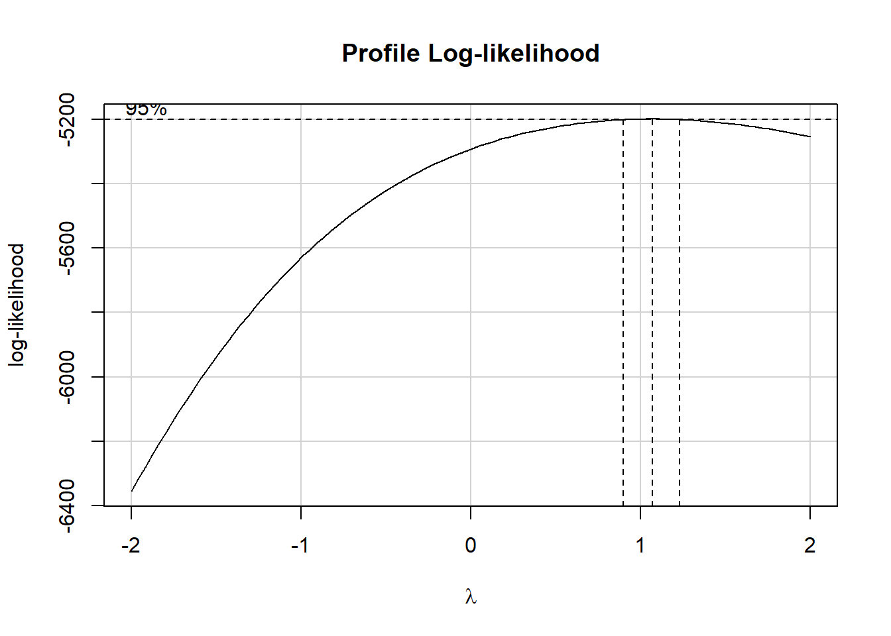
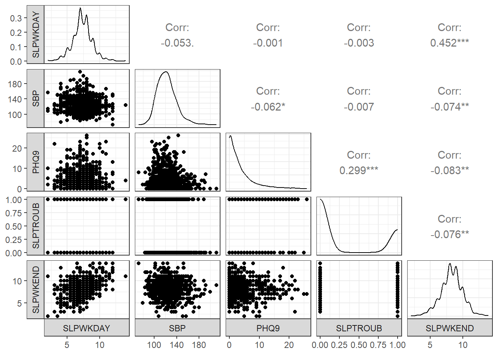
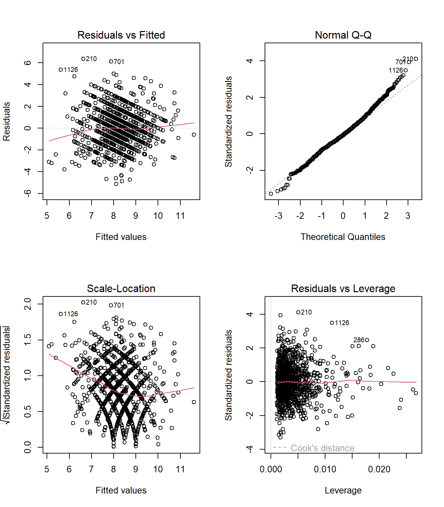
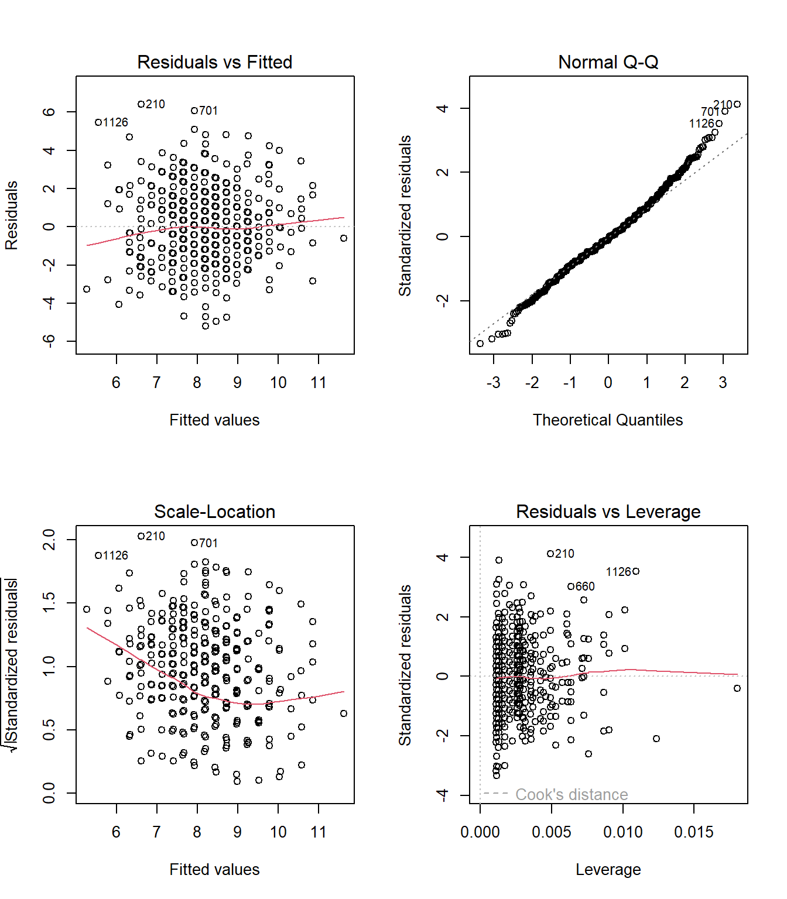
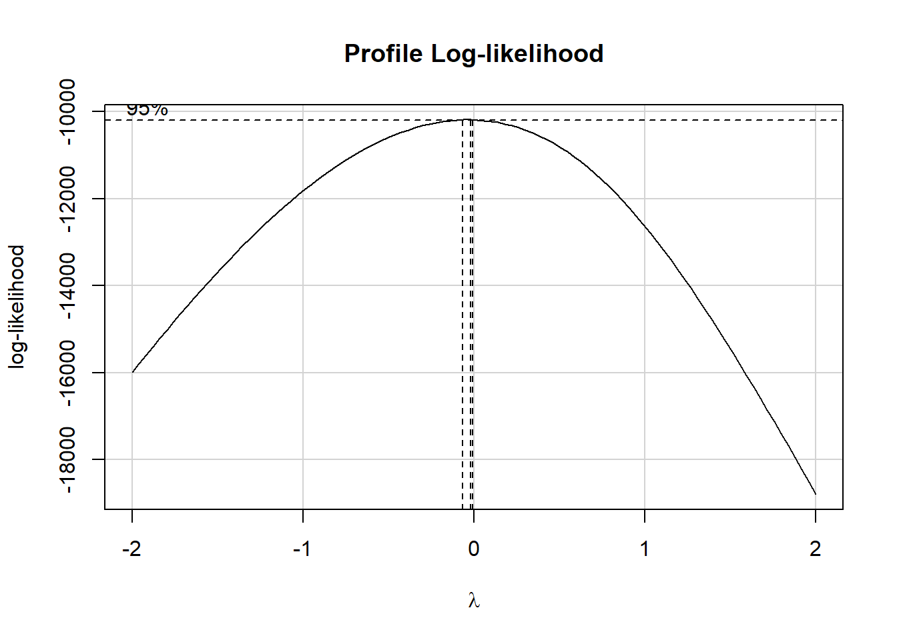
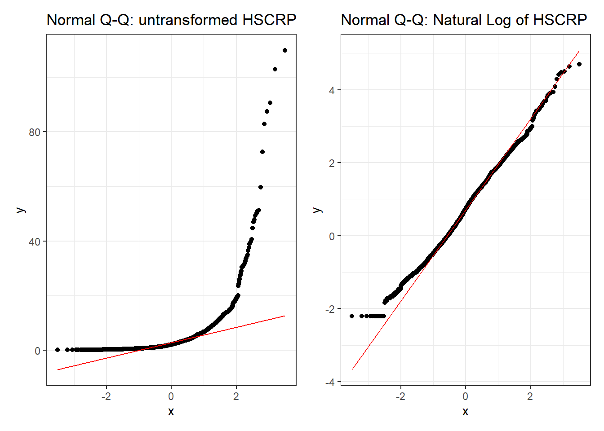
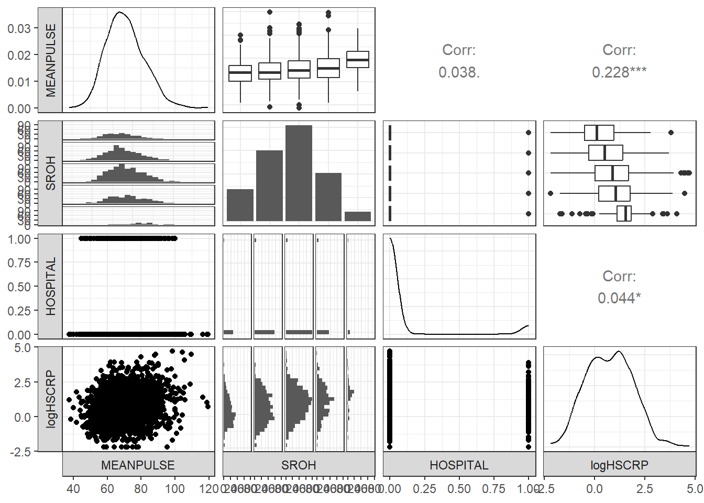
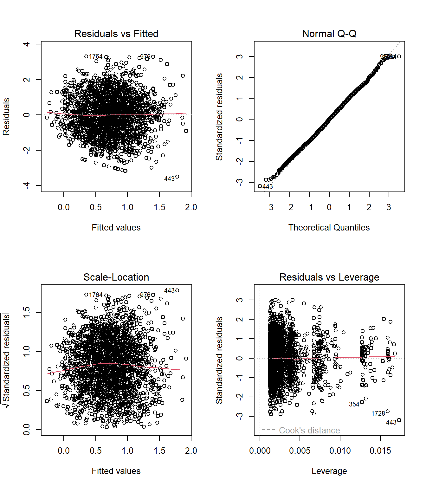
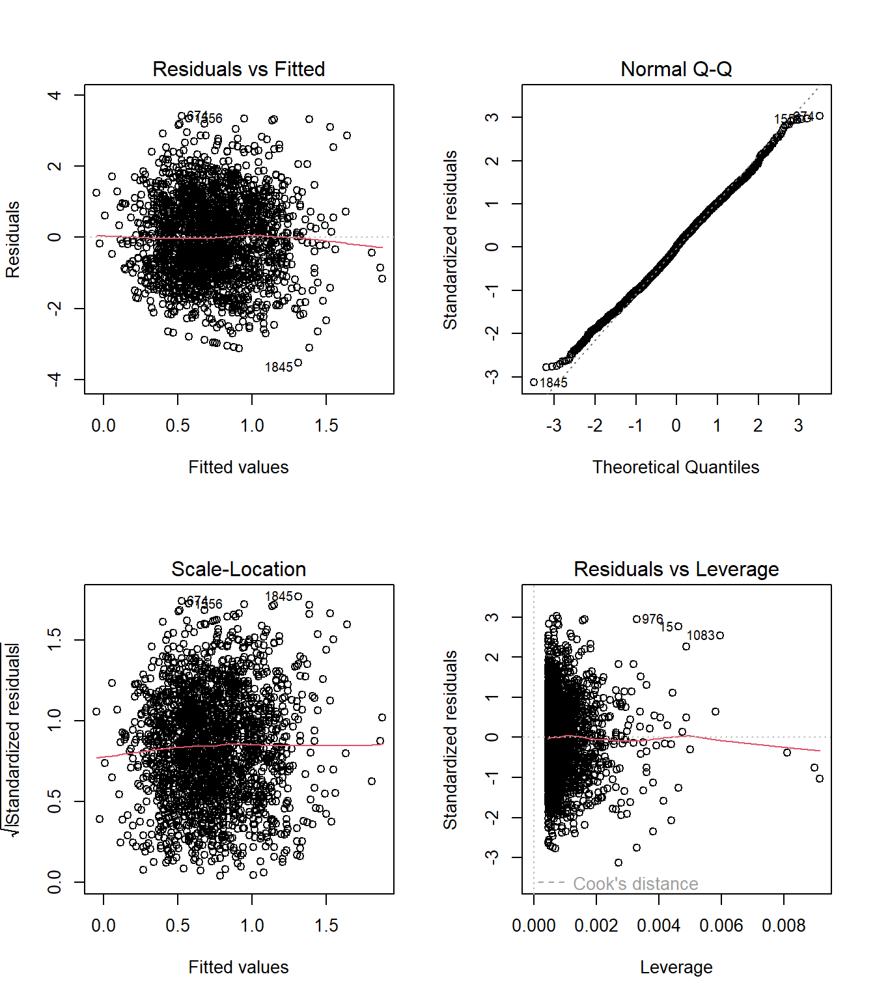

knitr::opts_chunk$set(comment = NA)
library(janitor)
library(broom)
library(car)
library(equatiomatic)
library(GGally)
library(gt)
library(Hmisc)
library(patchwork)
library(tidyverse)
theme_set(theme_bw())5 431 Review: Fitting Linear Models
In this Chapter, we will review some key issues about comparing proportions or rates, mostly drawn from the 431 course. This and the other Chapters labeled “431 Review” show elements of the two studies involved in a “431 Project B” using the pre-pandemic (2017 - March 2020) data from the National Health and Nutrition Examination Survey (NHANES) called nh432 that we developed in Chapter 1 and then summarized in Chapter 2. Note that we’ll ignore the issue of sampling weights and assume a “missing completely at random” (MCAR) mechanism in these “431 Review” chapters, so that we can work with complete cases.
The 431 course notes are at https://thomaselove.github.io/431-notes/ and will remain there until 2023-06-01.
5.1 R Setup
5.1.1 Data Load
nh432 <- read_rds("data/nh432.Rds")5.2 Modeling Weekend Sleep Hours
In this example, we’ll try to build an effective model to predict our outcome: average weekend hours of sleep (SLPWKEND) on the basis of four predictors:
- average weekday hours of sleep (SLPWKDAY)
- systolic blood pressure (SBP)
- PHQ-9 depression screener score (PHQ9), and
- whether or not the participant has mentioned trouble sleeping to a physician (SLPTROUB)
We’ll compare a model using all four of these predictors to a model using just the two directly related to sleep (SLPWKDAY and SLPTROUB), and we’ll restrict our analysis to those participants whose self-reported overall health (SROH) was “Good”.
dat1 <- nh432 |>
select(SEQN, SLPWKEND, SLPWKDAY, SBP, PHQ9, SLPTROUB, SROH) |>
filter(SROH == "Good") |>
drop_na()
dat1# A tibble: 1,293 × 7
SEQN SLPWKEND SLPWKDAY SBP PHQ9 SLPTROUB SROH
<chr> <dbl> <dbl> <dbl> <int> <dbl> <fct>
1 109273 8 6.5 110 15 1 Good
2 109293 6.5 7.5 130 3 0 Good
3 109295 7 7 161 0 1 Good
4 109305 6.5 6 125 0 0 Good
5 109307 11 7.5 114 0 0 Good
6 109315 5 5 123 1 0 Good
7 109336 8 4 148 1 1 Good
8 109342 8 6.5 107 16 1 Good
9 109365 9.5 9.5 133 7 0 Good
10 109378 9 9 133 0 0 Good
# … with 1,283 more rows5.2.1 Should we transform our outcome?
We can develop a Box-Cox plot to help us choose between potential transformations of our outcome, so as to improve the adherence to regression assumptions. To do so, we first fit our larger model.
m1 <- lm(SLPWKEND ~ SLPWKDAY + SBP + PHQ9 + SLPTROUB, data = dat1)
boxCox(m1)
The Box-Cox suggested set of transformations centers near \(\lambda = 1\). As we saw back in Chapter 3, The ladder of power transformations looks like this:
| \(\lambda\) | Transformation | Formula |
|---|---|---|
| -2 | inverse square | \(1/y^2\) |
| -1 | inverse | \(1/y\) |
| -0.5 | inverse square root | \(1/\sqrt{y}\) |
| 0 | logarithm | \(log y\) |
| 0.5 | square root | \(\sqrt{y}\) |
| 1 | no transformation | y |
| 2 | square | \(y^2\) |
| 3 | cube | \(y^3\) |
So, in this case, the Box-Cox approach (again, with \(\lambda\) near 1) suggests that we leave the existing SLPWKEND outcome alone.
5.2.2 Scatterplot Matrix
ggpairs(dat1, columns = c(3:6, 2), switch = "both",
lower=list(combo=wrap("facethist", bins=25)))
- The reason I included column 2 (our outcome: SLPWKEND) last in this plot is so that the bottom row would include each of our predictors plotted on the X (horizontal) axis against the outcome on the Y (vertical) axis, next to a density plot of the outcome.
- I also switched the locations of the facet labels on both the x and y axis from their defaults, so that the labels are to the left and below the plots, since I find that a bit easier to work with.
- The
lowerbusiness is to avoid getting a warning about binwidths. - The binary variable (SLPTROUB) is included here as a 1-0 numeric variable, rather than a factor, which is why the scatterplot matrix looks as it does, rather than creating a series of boxplots (as we’ll see when we work with a factor later.)
5.2.3 Collinearity?
In any multiple regression setting, two or more of the predictors might be highly correlated with one another, and this is referred to as multicollinearity or just collinearity. If we have a serious problem with collinearity, this can cause several problems, including difficulty fitting and interpreting the resulting model.
Is collinearity a serious concern in our situation? Looking at the scatterplot matrix, we see that the largest observed correlation between two predictors is between PHQ9 and SLPTROUB. Does that rise to the level of a problem?
I usually use the vif() function from the car package to help make this decision. The variance inflation factor (or VIF) measures how much the variance of a regression coefficient is inflated due to collinearity in the model. The smallest possible VIF value is 1, and VIFs near 1, as we’ll see here, indicate no problems with collinearity worth worrying about.
vif(m1)SLPWKDAY SBP PHQ9 SLPTROUB
1.002807 1.006778 1.102341 1.098187 Should we see a VIF (or generalized VIF, which is produced by the vif() function when we have factor variables in the model) above, say, 5, that would be an indication that the model would be improved by not including the variable that exhibits collinearity. Here, we have no such issues, and will proceed to fit the model including all of these predictors.
5.2.4 Fitting and Displaying Model m1
Here are the coefficients obtained from fitting the model m1.
m1 <- lm(SLPWKEND ~ SLPWKDAY + SBP + PHQ9 + SLPTROUB, data = dat1)
m1
Call:
lm(formula = SLPWKEND ~ SLPWKDAY + SBP + PHQ9 + SLPTROUB, data = dat1)
Coefficients:
(Intercept) SLPWKDAY SBP PHQ9 SLPTROUB
5.26266 0.52661 -0.00560 -0.02945 -0.20813 We can use the extract_eq() function from the equatiomatic package to display the model attractively.
extract_eq(m1, use_coefs = TRUE, coef_digits = 3,
wrap = TRUE, operator_location = "start")\[ \begin{aligned} \operatorname{\widehat{SLPWKEND}} &= 5.263 + 0.527(\operatorname{SLPWKDAY}) - 0.006(\operatorname{SBP}) - 0.029(\operatorname{PHQ9})\\ &\quad - 0.208(\operatorname{SLPTROUB}) \end{aligned} \]
If Harry and Sally have the same values of SLPWKDAY, SBP and SLPTROUB, but Harry’s PHQ9 is one point higher than Sally’s, then model m1 predicts that Harry will sleep 0.029 hours less than Sally on the weekends.
A summary of the regression model m1 provides lots of useful information about the parameters (including their standard errors) and the quality of fit (at least as measured by \(R^2\) and adjusted \(R^2\).)
summary(m1)
Call:
lm(formula = SLPWKEND ~ SLPWKDAY + SBP + PHQ9 + SLPTROUB, data = dat1)
Residuals:
Min 1Q Median 3Q Max
-5.1173 -0.9609 -0.1005 0.9248 6.3659
Coefficients:
Estimate Std. Error t value Pr(>|t|)
(Intercept) 5.262657 0.388427 13.549 < 2e-16 ***
SLPWKDAY 0.526612 0.028950 18.190 < 2e-16 ***
SBP -0.005600 0.002515 -2.227 0.02613 *
PHQ9 -0.029450 0.010955 -2.688 0.00727 **
SLPTROUB -0.208129 0.098758 -2.107 0.03527 *
---
Signif. codes: 0 '***' 0.001 '**' 0.01 '*' 0.05 '.' 0.1 ' ' 1
Residual standard error: 1.554 on 1288 degrees of freedom
Multiple R-squared: 0.2171, Adjusted R-squared: 0.2147
F-statistic: 89.3 on 4 and 1288 DF, p-value: < 2.2e-165.2.5 Using broom functions on Model m1
If we want to actually use the information in the model summary elsewhere, we use the tidy() and glance() functions from the broom package to help us.
tidy(m1, conf.int = TRUE, conf.level = 0.90)# A tibble: 5 × 7
term estimate std.error statistic p.value conf.low conf.high
<chr> <dbl> <dbl> <dbl> <dbl> <dbl> <dbl>
1 (Intercept) 5.26 0.388 13.5 3.41e-39 4.62 5.90
2 SLPWKDAY 0.527 0.0290 18.2 5.52e-66 0.479 0.574
3 SBP -0.00560 0.00251 -2.23 2.61e- 2 -0.00974 -0.00146
4 PHQ9 -0.0294 0.0110 -2.69 7.27e- 3 -0.0475 -0.0114
5 SLPTROUB -0.208 0.0988 -2.11 3.53e- 2 -0.371 -0.0456 Here’s a cleaner presentation of the tidy() output.
tidy(m1, conf.int = TRUE, conf.level = 0.90) |>
mutate(across(.cols = -c(term), num, digits = 3)) |>
gt()| term | estimate | std.error | statistic | p.value | conf.low | conf.high |
|---|---|---|---|---|---|---|
| (Intercept) | 5.263 | 0.388 | 13.549 | 0.000 | 4.623 | 5.902 |
| SLPWKDAY | 0.527 | 0.029 | 18.190 | 0.000 | 0.479 | 0.574 |
| SBP | -0.006 | 0.003 | -2.227 | 0.026 | -0.010 | -0.001 |
| PHQ9 | -0.029 | 0.011 | -2.688 | 0.007 | -0.047 | -0.011 |
| SLPTROUB | -0.208 | 0.099 | -2.107 | 0.035 | -0.371 | -0.046 |
Note that none of the 90% confidence intervals here cross zero. This just means that we have a pretty good handle on the direction of effects - for example, our estimate for the slope of SLPWKDAY is positive, suggesting that people who sleep more during the week also sleep more on the weekend, after accounting for SBP, PHQ9 and SLPTROUB.
glance(m1)# A tibble: 1 × 12
r.squared adj.r.squa…¹ sigma stati…² p.value df logLik AIC BIC devia…³
<dbl> <dbl> <dbl> <dbl> <dbl> <dbl> <dbl> <dbl> <dbl> <dbl>
1 0.217 0.215 1.55 89.3 4.93e-67 4 -2402. 4817. 4848. 3111.
# … with 2 more variables: df.residual <int>, nobs <int>, and abbreviated
# variable names ¹adj.r.squared, ²statistic, ³devianceModel m1 shows an \(R^2\) value of 0.217, which means that 21.7% of the variation in our outcome SLPWKEND is accounted for by the model using SLPWKDAY, SBP, PHQ9 and SLPTROUBLE.
The adjusted \(R^2\) value isn’t a percentage or proportion of anything, but it is a handy index when comparing two models fit to the same outcome for the same observations. It penalizes the raw \(R^2\) value for models that require more coefficients to be fit. If the raw \(R^2\) is much larger than the adjusted \(R^2\) value, this is also an indication that the model may be “overfit” - capitalizing on noise in the data more than we’d like, so that the amount of signal in the predictors may be overstated by raw \(R^2\).
Here’s a cleaner presentation of some of the more important elements in the glance() output:
glance(m1) |>
select(r2 = r.squared, adjr2 = adj.r.squared,
AIC, BIC, sigma, nobs, df, df.res = df.residual) |>
gt()| r2 | adjr2 | AIC | BIC | sigma | nobs | df | df.res |
|---|---|---|---|---|---|---|---|
| 0.217108 | 0.2146766 | 4816.624 | 4847.613 | 1.55416 | 1293 | 4 | 1288 |
- AIC and BIC are measures used to compare models for the same outcome using the same data, so we’ll see those again when we fit a second model to these data. In those comparisons, smaller values of AIC and BIC indicate better fitting models.
- nobs is the number of observations used to actually fit our model
m1, - df indicates the number of degrees of freedom used by the model, and represents the number of estimated coefficients fit, while
- df.res = nobs - df - 1 = residual degrees of freedom.
5.2.6 Residual Plots for Model m1
The key assumptions for a linear regression model include:
- Linearity of the association under study
- Normality of the residuals
- Constant Variance (Homoscedasticity)
- Independence (not an issue with cross-sectional data like this)
A residual for a point in a regression model is just the observed value of our outcome (here, SLPWKEND) minus the value predicted by the model based on the predictor values (also called the fitted value.)
The four key plots that R will generate for you to help assess these results are shown below for model m1.
## I used
## #| fig.height: 8
## at the top of this code chunk
## to make the plots tall enough to see well
par(mfrow = c(2,2)); plot(m1); par(mfrow = c(1,1))
5.2.6.1 Residuals vs. Fitted values
The top left plot (Residuals vs. Fitted Values) helps us to assess the linearity and constant variance assumptions.
- We want to see a “fuzzy football” shape.
- A clear curve is indicative of a problem with linearity, and suggests that perhaps a transformation of the outcome (or perhaps one or more predictors) may be in order
- A fan shape, with much more variation at one end of the fitted values (left or right) than the other indicates a problem with the constant variance assumption, and again a transformation may be needed.
The diagonal lines we see in the Residuals vs. Fitted plot are the result of the fact that both the outcome (SLPWKEND) and a key predictor (SLPWKDAYS) aren’t really continuous in the data, as most of the responses to those questions were either integers, or used 0.5 as the fraction. So those two variables are more discrete than we might have expected.
5.2.6.2 Normal Q-Q plot of standardized residuals
The top right plot (Normal Q-Q) is a Normal Q-Q plot of the standardized regression residuals for our model m1. Substantial issues with skew (a curve in the plot) or a major problem with outliers (as indicated by a reverse S-shape) indicate potential concerns with the Normality assumption. Since the y-axis here shows standardized residuals, we can also assess whether what we’re seeing is especially surprising relative to our expectations for any standardized values (for example, we should see values above +3 or below -3 approximately 3 times in 1000).
- Remember that this plot represents nobs = 1293 residuals, so a few values near 3 in absolute value aren’t surprising.
- We’re looking for big deviations from Normality here.
- The
plot()function in R will always identify three of the cases, by default, in these four plots.
Suppose we wanted to look at the data for case 210, identified by these plots as a potential outlier, or at least a poorly fit point.
dat1_aug <- augment(m1, data = dat1)
dat1_aug |> slice(210) |>
select(SEQN, SLPWKEND, .fitted, .resid, .std.resid, everything())# A tibble: 1 × 13
SEQN SLPWK…¹ .fitted .resid .std.…² SLPWK…³ SBP PHQ9 SLPTR…⁴ SROH .hat
<chr> <dbl> <dbl> <dbl> <dbl> <dbl> <dbl> <int> <dbl> <fct> <dbl>
1 1116… 13 6.63 6.37 4.11 4 126 1 0 Good 0.00504
# … with 2 more variables: .sigma <dbl>, .cooksd <dbl>, and abbreviated
# variable names ¹SLPWKEND, ².std.resid, ³SLPWKDAY, ⁴SLPTROUBWe see that row 210 contains SEQN 111688, whose
- observed SLPWKEND is 13
- fitted SLPWKEND is 6.63
- yielding a residual of 6.37,
- or a standardized residual of 4.11
We can use the outlierTest() function in the car package to help assess whether this value is unusual enough to merit more careful consideration. This function actually works with the studentized residual, which is similar to the standardized residual we saw above. Here, this point (SEQN 111688) is fit poorly enough to be flagged by the Bonferroni outlier test as a mean-shift outlier.
outlierTest(m1) rstudent unadjusted p-value Bonferroni p
210 4.131972 3.8289e-05 0.049508Having seen that, though, I’m going to essentially ignore it for the moment, and press on to the rest of our residual analysis.
5.2.6.3 Scale-Location plot
The bottom left plot in our set of four residual plots is the Scale-Location plot, which presents the square root of the standardized residuals against the fitted values. This plot provides another check on the “equal variance” assumption - if the plot shows a clear trend either up or down as we move left to right, then that indicates an issue with constant variance. While a loess smooth is provided (red curve) to help guide our thinking, it’s important not to get too excited about small changes or changes associated with small numbers of observations.
You’ll also note the presence of curves (in particular, little “V” shapes) formed by the points of the plot. Again, this is caused by the discrete nature of the outcome (and one of the key predictors) and wouldn’t be evident if our outcome was more continuous.
Despite the drop in the red loess smooth as fitted values move from 5 to about 8, I don’t see much of a pattern here to indicate trouble with non-constant variance.
5.2.6.4 Residuals vs. Leverage plot
The bottom-left plot is a plot of residuals vs. leverage, with influence contours.
Highly leveraged points have unusual combinations of predictor values.
Highly influential points have a big impact on the model, in that the model’s coefficients or quality of fit would change markedly were those points to be removed from the model. To measure influence, we combine leverage and residuals together, with a measure like Cook’s distance.
- To look for points with substantial leverage on the model by virtue of having unusual values of the predictors - look for points whose leverage is at least 3 times as large as the average leverage value.
- The average leverage is always k/n, where k is the number of coefficients fit by the model (including the slopes and intercept), and n is the number of observations in the model.
- To obtain the leverage values, the
augment()function stores them in.hat. - To look for points with substantial influence on the model, that is, removing them from the model would change it substantially, consider the Cook’s distance, plotted in contours here.
- Any Cook’s distance point > 1 will likely have a substantial impact on the model.
- Any points with Cook’s distance > 0.5, if any, will be indicated in the bottom-right (Residuals vs. Leverage) plot, and are worthy of investigation.
- In model
m1, we have no points with values of Cook’s distance > 0.5. To obtain the Cook’s distance values for each point, use theaugment()function, which stores them in.cooksd.
Here, for example, we identify the points with largest leverage and with largest Cook’s distance, across the points used to fit m1.
dat1_aug <- augment(m1, data = dat1)
dat1_aug |> slice_max(.hat) |>
select(SEQN, .hat, .resid, .fitted, .cooksd, everything())# A tibble: 1 × 13
SEQN .hat .resid .fitted .cooksd SLPWK…¹ SLPWK…² SBP PHQ9 SLPTR…³ SROH
<chr> <dbl> <dbl> <dbl> <dbl> <dbl> <dbl> <dbl> <int> <dbl> <fct>
1 123474 0.0268 -1.03 8.03 0.00250 7 8 126 25 0 Good
# … with 2 more variables: .sigma <dbl>, .std.resid <dbl>, and abbreviated
# variable names ¹SLPWKEND, ²SLPWKDAY, ³SLPTROUBdat1_aug |> slice_max(.cooksd) |>
select(SEQN, .hat, .resid, .fitted, .cooksd, everything())# A tibble: 1 × 13
SEQN .hat .resid .fitted .cooksd SLPWK…¹ SLPWK…² SBP PHQ9 SLPTR…³ SROH
<chr> <dbl> <dbl> <dbl> <dbl> <dbl> <dbl> <dbl> <int> <dbl> <fct>
1 122894 0.0113 5.38 5.62 0.0277 11 2 114 2 0 Good
# … with 2 more variables: .sigma <dbl>, .std.resid <dbl>, and abbreviated
# variable names ¹SLPWKEND, ²SLPWKDAY, ³SLPTROUBIt turns out that SEQN 123474 has the largest value of leverage (.hat) and SEQN 122894 has the largest value of influence (.cooksd) in our model. We will worry about .cooksd values above 0.5, but the largest value in this model is much smaller than that, so I think we’re OK for now.
5.2.7 Fitting and Displaying Model m2
We will now move on to compare the results of this model (m1) to a smaller model.
Our second model, m2 is a subset of m1, including only the two predictors directly related to sleep, SLPWKDAY and SLPTROUB.
m2 <- lm(SLPWKEND ~ SLPWKDAY + SLPTROUB, data = dat1)
m2
Call:
lm(formula = SLPWKEND ~ SLPWKDAY + SLPTROUB, data = dat1)
Coefficients:
(Intercept) SLPWKDAY SLPTROUB
4.4813 0.5301 -0.2862 extract_eq(m2, use_coefs = TRUE, coef_digits = 3,
wrap = TRUE, operator_location = "start")\[ \begin{aligned} \operatorname{\widehat{SLPWKEND}} &= 4.481 + 0.53(\operatorname{SLPWKDAY}) - 0.286(\operatorname{SLPTROUB}) \end{aligned} \]
Note that the slopes of both SLPWKDAY and SLPTROUB have changed from model m1 (although not very much), and that the intercept has changed more substantially.
5.2.8 Using broom functions on m2
tidy(m2, conf.int = TRUE, conf.level = 0.90) |>
mutate(across(.cols = -c(term), num, digits = 3)) |>
gt()| term | estimate | std.error | statistic | p.value | conf.low | conf.high |
|---|---|---|---|---|---|---|
| (Intercept) | 4.481 | 0.219 | 20.475 | 0.000 | 4.121 | 4.842 |
| SLPWKDAY | 0.530 | 0.029 | 18.268 | 0.000 | 0.482 | 0.578 |
| SLPTROUB | -0.286 | 0.095 | -3.025 | 0.003 | -0.442 | -0.130 |
glance(m2) |>
select(r2 = r.squared, adjr2 = adj.r.squared,
AIC, BIC, sigma, nobs, df, df.res = df.residual) |>
gt()| r2 | adjr2 | AIC | BIC | sigma | nobs | df | df.res |
|---|---|---|---|---|---|---|---|
| 0.2101295 | 0.2089049 | 4824.099 | 4844.758 | 1.559861 | 1293 | 2 | 1290 |
Since we want to compare the fit of m1 to that of m2, we probably want to do so in a single table, like this:
temp1 <- glance(m1) |>
select(r2 = r.squared, adjr2 = adj.r.squared,
AIC, BIC, sigma, nobs, df, df.res = df.residual) |>
mutate(model = "m1") |>
relocate(model)
temp2 <- glance(m2) |>
select(r2 = r.squared, adjr2 = adj.r.squared,
AIC, BIC, sigma, nobs, df, df.res = df.residual) |>
mutate(model = "m2") |>
relocate(model)
bind_rows(temp1, temp2) |>
gt()| model | r2 | adjr2 | AIC | BIC | sigma | nobs | df | df.res |
|---|---|---|---|---|---|---|---|---|
| m1 | 0.2171080 | 0.2146766 | 4816.624 | 4847.613 | 1.554160 | 1293 | 4 | 1288 |
| m2 | 0.2101295 | 0.2089049 | 4824.099 | 4844.758 | 1.559861 | 1293 | 2 | 1290 |
Each model uses the same number of observations to predict the same outcome (SLPWKEND). So we can compare them directly. As compared to model m2, model m1 has:
- the larger \(R^2\) (as it must, since model
m2includes a subset of the predictors in modelm1), - the larger adjusted \(R^2\),
- the smaller AIC (Akaike Information Criterion: smaller values are better),
- the larger BIC (Bayes Information Criterion: again, smaller values are better),
- and the smaller residual standard error (\(\sigma\)) (smaller values are better.)
The key realizations for these data are that the AIC, adjusted \(R^2\) and \(\sigma\) results favor model m1 while the BIC favors model m2.
5.2.9 Residual Plots for Model m2
## I used #| fig.height: 8 in this code chunk
## to make the plots tall enough to see well
par(mfrow = c(2,2)); plot(m2); par(mfrow = c(1,1))
The residual plots here show (even more starkly than in model m1) the discrete nature of our outcome and the two variables we’re using to predict it. I see no especially serious problems with the assumptions of linearity or constant variance here, and while there are still some fairly poorly fit values, there are no highly influential points, so I’ll accept these residual plots as indicative of a fairly reasonable model on the whole.
5.2.10 Conclusions
Three of our four in-sample measures of fit quality (AIC, \(\sigma\) and adjusted \(R^2\)) favor the larger model m1 over m2, but there’s not a lot to choose from here. Neither model showed important problems with regression assumptions, so I would probably wind up choosing m1 based on the analyses we’ve done in this Chapter.
However, a more appropriate strategy for prediction assessment would be to partition the data into separate samples for model training (the development or building sample) and model testing. We adopt such a model validation strategy in our next little study.
5.3 Modeling High-Sensitivity C-Reactive Protein
In this, our second linear modeling example, we will try to predict High-Sensitivity C-Reactive Protein levels (HSCRP) on the basis of these three predictor variables:
- the participant’s mean pulse rate, specifically the mean of the two gathered pulse rates, PULSE1 and PULSE2
- the participant’s self-reported overall health (SROH, which is an ordinal factor with levels Excellent, Very Good, Good, Fair and Poor)
- HOSPITAL, a 1-0 binary variable indicating whether or not the participant was hospitalized in the past year.
In this case, we’ll use all NHANES participants with complete data on the relevant variables to fit the three-predictor model, and then a second model using mean pulse rate alone.
dat2 <- nh432 |>
select(SEQN, HSCRP, PULSE1, PULSE2, SROH, HOSPITAL) |>
drop_na() |>
mutate(MEANPULSE = 0.5*(PULSE1 + PULSE2))
glimpse(dat2)Rows: 3,117
Columns: 7
$ SEQN <chr> "109271", "109273", "109291", "109292", "109293", "109295", …
$ HSCRP <dbl> 28.68, 0.98, 5.31, 3.08, 15.10, 6.28, 0.56, 1.45, 0.32, 0.86…
$ PULSE1 <dbl> 73, 71, 77, 93, 62, 93, 74, 59, 66, 83, 64, 55, 54, 63, 68, …
$ PULSE2 <dbl> 71, 70, 76, 91, 64, 93, 74, 58, 64, 87, 68, 55, 54, 63, 70, …
$ SROH <fct> Fair, Good, Fair, Very Good, Good, Good, Very Good, Excellen…
$ HOSPITAL <dbl> 0, 0, 1, 0, 0, 0, 0, 0, 0, 0, 0, 0, 0, 0, 0, 0, 0, 0, 0, 0, …
$ MEANPULSE <dbl> 72.0, 70.5, 76.5, 92.0, 63.0, 93.0, 74.0, 58.5, 65.0, 85.0, …5.3.1 Partitioning the Data
Before partitioning, it’s always a good idea to be sure that the number of rows in the tibble matches the number of distinct (unique) values in the identifier column.
identical(nrow(dat2), n_distinct(dat2 |> select(SEQN)))[1] TRUEOK. Now, be sure to set a seed so that we can replicate the selection. We’ll put 70% of the data in our training sample, setting aside the remaining 30% for the test sample.
set.seed(432005)
dat2_train <- slice_sample(dat2, prop = 0.70)
dat2_test <- anti_join(dat2, dat2_train, by = "SEQN")
c(nrow(dat2), nrow(dat2_train), nrow(dat2_test))[1] 3117 2181 936In what follows, we’ll work with the dat2_train sample, and set aside the dat2_test sample for a while.
5.3.2 Transforming the Outcome?
Let’s use the Box-Cox approach to help us think about which potential transformations of our outcome might be helpful, within our training sample.
m_temp <- lm(HSCRP ~ MEANPULSE + SROH + HOSPITAL, data = dat2_train)
boxCox(m_temp)
The estimated \(\lambda\) value is very close to 0, which according to the ladder of power transformations, suggests we take the logarithm of our outcome, so as to improve the residual plots for the model. This will also, as it turns out, lead to a much less right-skewed outcome variable.
p1 <- ggplot(dat2_train, aes(sample = HSCRP)) +
geom_qq() + geom_qq_line(col = "red") +
labs(title = "Normal Q-Q: untransformed HSCRP")
p2 <- ggplot(dat2_train, aes(sample = log(HSCRP))) +
geom_qq() + geom_qq_line(col = "red") +
labs(title = "Normal Q-Q: Natural Log of HSCRP")
p1 + p2
Clearly, one benefit of the transformation is some improvement in the Normality of our outcome’s distribution.
5.3.3 Scatterplot Matrix and Collinearity
To build the relevant scatterplot matrix with our transformed outcome, I’ll create a variable containing the result of the transformation within our training sample.
dat2_train <- dat2_train |>
mutate(logHSCRP = log(HSCRP))
names(dat2_train)[1] "SEQN" "HSCRP" "PULSE1" "PULSE2" "SROH" "HOSPITAL"
[7] "MEANPULSE" "logHSCRP" ggpairs(dat2_train, columns = c(7,5,6,8), switch = "both",
lower=list(combo=wrap("facethist", bins=25)))
As a collinearity check, we’ll run vif() from the car package here.
m3 <- lm(log(HSCRP) ~ MEANPULSE + SROH + HOSPITAL,
data = dat2_train)
vif(m3) GVIF Df GVIF^(1/(2*Df))
MEANPULSE 1.036382 1 1.018028
SROH 1.063545 4 1.007731
HOSPITAL 1.027860 1 1.013834Again, no signs of meaningful collinearity. Note the presentation of the factor variable SROH in the scatterplot matrix, and in the generalized VIF output.
5.3.4 Fit Model m3
m3 <- lm(log(HSCRP) ~ MEANPULSE + SROH + HOSPITAL,
data = dat2_train)extract_eq(m3, use_coefs = TRUE, coef_digits = 3,
terms_per_line = 3, wrap = TRUE,
operator_location = "start")\[ \begin{aligned} \operatorname{\widehat{log(HSCRP)}} &= -1.108 + 0.02(\operatorname{MEANPULSE}) + 0.237(\operatorname{SROH}_{\operatorname{Very\ Good}})\\ &\quad + 0.532(\operatorname{SROH}_{\operatorname{Good}}) + 0.641(\operatorname{SROH}_{\operatorname{Fair}}) + 0.86(\operatorname{SROH}_{\operatorname{Poor}})\\ &\quad + 0.052(\operatorname{HOSPITAL}) \end{aligned} \]
tidy(m3, conf.int = TRUE, conf.level = 0.90) |>
mutate(across(.cols = -c(term), num, digits = 3)) |>
gt()| term | estimate | std.error | statistic | p.value | conf.low | conf.high |
|---|---|---|---|---|---|---|
| (Intercept) | -1.108 | 0.160 | -6.914 | 0.000 | -1.372 | -0.845 |
| MEANPULSE | 0.020 | 0.002 | 9.359 | 0.000 | 0.017 | 0.024 |
| SROHVery Good | 0.237 | 0.081 | 2.939 | 0.003 | 0.104 | 0.370 |
| SROHGood | 0.532 | 0.078 | 6.857 | 0.000 | 0.404 | 0.660 |
| SROHFair | 0.641 | 0.087 | 7.353 | 0.000 | 0.497 | 0.784 |
| SROHPoor | 0.860 | 0.143 | 6.020 | 0.000 | 0.625 | 1.095 |
| HOSPITAL | 0.052 | 0.088 | 0.594 | 0.552 | -0.092 | 0.197 |
- If Harry and Sally have the same values of HOSPITAL and MEANPULSE, but Harry’s SROH is “Very Good” while Sally’s is “Excellent”, then model
m3predicts that Harry will have a log(HSCRP) that is 0.237 (90% CI: 0.104, 0.370) larger than Sally’s log(HSCRP). - On the other hand, if Harry and Gary have the same values of HOSPITAL and MEANPULSE, but Harry’s SROH remains “Very Good” while Gary’s is only “Good”, then model
m3predicts that Gary will have a log(HSCRP) that is (0.532 - 0.237 = 0.295) larger than Harry’s log(HSCRP).
5.3.5 Residual Plots for m3
## don't forget to use #| fig.height: 8
## to make the residual plots taller
par(mfrow = c(2,2)); plot(m3); par(mfrow = c(1,1))
I see no serious concerns with regression assumptions here. The residuals vs. fitted plot shows no signs of meaningful non-linearity or heteroscedasticity. The standardized residuals in the Normal Q-Q plot follow the reference line closely. There is no clear trend in the scale-location plot, and the residuals vs. leverage plot reveals no particularly influential points.
5.3.6 Fit Model m4
Let’s now fit the simple regression model, m4, with only MEANPULSE as a predictor of the log of HSCRP.
m4 <- lm(log(HSCRP) ~ MEANPULSE,
data = dat2_train)extract_eq(m4, use_coefs = TRUE, coef_digits = 3,
wrap = TRUE, operator_location = "start")\[ \begin{aligned} \operatorname{\widehat{log(HSCRP)}} &= -0.929 + 0.023(\operatorname{MEANPULSE}) \end{aligned} \]
Now, let’s look at the tidied coefficients.
tidy(m4, conf.int = TRUE, conf.level = 0.90) |>
mutate(across(.cols = -c(term), num, digits = 3)) |>
gt()| term | estimate | std.error | statistic | p.value | conf.low | conf.high |
|---|---|---|---|---|---|---|
| (Intercept) | -0.929 | 0.154 | -6.048 | 0.000 | -1.181 | -0.676 |
| MEANPULSE | 0.023 | 0.002 | 10.934 | 0.000 | 0.020 | 0.027 |
- If Harry’s mean pulse rate is one beat per minute higher than Sally’s, then model
m4predicts that the logarithm of Harry’s HSCRP will be 0.023 higher than Sally’s, with 90% CI (0.020, 0.027). - Note that if Harry’s mean pulse rate is ten beats per minute higher than Sally’s, then model
m4predicts that the logarithm of Harry’s HSCRP will be 0.23 higher than Sally’s, with 90% CI (0.20, 0.27).
5.3.7 Residual Plots for m4
par(mfrow = c(2,2)); plot(m4); par(mfrow = c(1,1))
5.3.8 In-Sample Fit Quality Comparison (m3 vs. m4)
g3 <- glance(m3) |>
select(r2 = r.squared, adjr2 = adj.r.squared,
AIC, BIC, sigma, nobs, df, df.res = df.residual) |>
mutate(model = "m3") |>
relocate(model)
g4 <- glance(m4) |>
select(r2 = r.squared, adjr2 = adj.r.squared,
AIC, BIC, sigma, nobs, df, df.res = df.residual) |>
mutate(model = "m4") |>
relocate(model)
bind_rows(g3, g4) |> gt()| model | r2 | adjr2 | AIC | BIC | sigma | nobs | df | df.res |
|---|---|---|---|---|---|---|---|---|
| m3 | 0.09070792 | 0.08819837 | 6636.024 | 6681.525 | 1.105532 | 2181 | 6 | 2174 |
| m4 | 0.05200815 | 0.05157309 | 6716.928 | 6733.990 | 1.127517 | 2181 | 1 | 2179 |
The larger model (model m3) has better results than model m4 in the sense that it produces a larger adjusted \(R^2\), and smaller values for AIC, BIC and \(\sigma\). Based on this comparison within the training sample, we clearly prefer m3, since each model shows reasonable adherence to the assumptions of a linear regression model.
5.3.9 Testing the models in new data
At last we return to the dat2_test sample which was not used in fitting models m3 and m4 to investigate which of these models has better predictive results in new data. When doing this sort of testing, I recommend a look at the following 4 summaries, each of which is based on the fitted (predicted) and observed values of our outcome in our new data, using the models we want to compare:
- squared correlation of predicted with observed values (validated \(R^2\); higher values are better)
- mean absolute prediction error (MAPE; smaller values indicate smaller errors, hence better prediction)
- square root of the mean squared prediction error (RMSPE; again, smaller values indicate better predictions)
- maximum (in absolute value) prediction error (Max Error)
To obtain observed, predicted, and error (observed - predicted) values for each new data point when we apply model m3, we first use the augment() function from the broom package to obtain our .fitted values.
m3_test_aug <- augment(m3, newdata = dat2_test)
head(m3_test_aug)# A tibble: 6 × 9
SEQN HSCRP PULSE1 PULSE2 SROH HOSPITAL MEANPULSE .fitted .resid
<chr> <dbl> <dbl> <dbl> <fct> <dbl> <dbl> <dbl> <dbl>
1 109273 0.98 71 70 Good 0 70.5 0.839 -0.859
2 109293 15.1 62 64 Good 0 63 0.688 2.03
3 109312 0.86 83 87 Very Good 0 85 0.835 -0.985
4 109332 2.29 63 63 Excellent 0 63 0.156 0.673
5 109340 4.64 78 78 Fair 0 78 1.10 0.437
6 109342 5.51 72 70 Good 0 71 0.849 0.858Remember, however, that our models m3 and m4 do not predict HSCRP, but rather the logarithm of HSCRP, so we need to exponentiate the .fitted values to get what we want.
m3_test_aug <- augment(m3, newdata = dat2_test) |>
mutate(fits = exp(.fitted),
resid = HSCRP - fits) |>
select(SEQN, HSCRP, fits, resid, everything())
head(m3_test_aug)# A tibble: 6 × 11
SEQN HSCRP fits resid PULSE1 PULSE2 SROH HOSPI…¹ MEANP…² .fitted .resid
<chr> <dbl> <dbl> <dbl> <dbl> <dbl> <fct> <dbl> <dbl> <dbl> <dbl>
1 109273 0.98 2.31 -1.33 71 70 Good 0 70.5 0.839 -0.859
2 109293 15.1 1.99 13.1 62 64 Good 0 63 0.688 2.03
3 109312 0.86 2.30 -1.44 83 87 Very Go… 0 85 0.835 -0.985
4 109332 2.29 1.17 1.12 63 63 Excelle… 0 63 0.156 0.673
5 109340 4.64 3.00 1.64 78 78 Fair 0 78 1.10 0.437
6 109342 5.51 2.34 3.17 72 70 Good 0 71 0.849 0.858
# … with abbreviated variable names ¹HOSPITAL, ²MEANPULSENow, we can obtain our summaries, as follows.
m3_test_results <- m3_test_aug |>
summarize(validated_R_sq = cor(HSCRP, fits)^2,
MAPE = mean(abs(resid)),
RMSPE = sqrt(mean(resid^2)),
max_Error = max(abs(resid)))
m3_test_results# A tibble: 1 × 4
validated_R_sq MAPE RMSPE max_Error
<dbl> <dbl> <dbl> <dbl>
1 0.114 3.45 10.7 177.For model m4, we have:
m4_test_aug <- augment(m4, newdata = dat2_test) |>
mutate(fits = exp(.fitted),
resid = HSCRP - fits) |>
select(SEQN, HSCRP, fits, resid, everything())
m4_test_results <- m4_test_aug |>
summarize(validated_R_sq = cor(HSCRP, fits)^2,
MAPE = mean(abs(resid)),
RMSPE = sqrt(mean(resid^2)),
max_Error = max(abs(resid)))
m4_test_results# A tibble: 1 × 4
validated_R_sq MAPE RMSPE max_Error
<dbl> <dbl> <dbl> <dbl>
1 0.102 3.50 10.8 177.And we can put the two sets of results together into a nice table.
bind_rows(m3_test_results, m4_test_results) |>
mutate(model = c("m3", "m4")) |>
relocate(model) |>
gt()| model | validated_R_sq | MAPE | RMSPE | max_Error |
|---|---|---|---|---|
| m3 | 0.1135858 | 3.451295 | 10.72894 | 176.9855 |
| m4 | 0.1015280 | 3.496673 | 10.79613 | 177.0716 |
Based on these out-of-sample validation results, it seems that Model m3 has the better results across each of these four summaries than Model 4 does.
5.3.10 Conclusions
We fit two models to predict HSCRP, a larger model (m3) containing three predictors (MEANPULSE, SROH and HOSPITAL), and a smaller model (m4) containing only the MEANPULSE as a predictor.
- Both models (after transforming to log(HSCRP) for our outcome) seem to generally meet the assumptions of linear regression
- Model
m3had a raw \(R^2\) value of 0.091, so it accounted for about 9.1% of the variation in log(HSCRP) within our training sample. Modelm4accounted for 5.2%. - In our in-sample checks, Model
m3had better results in terms of adjusted \(R^2\), AIC, BIC and \(\sigma\). - In a validation (test) sample, our Model
m3also showed superior predictive performance, including better results in terms of MAPE, RMSPE and maximum absolute error, as well as a validated \(R^2\) of 11.4%, higher than modelm4’s result of 10.2%.
Overall, model m3 seems like the meaningfully better choice.